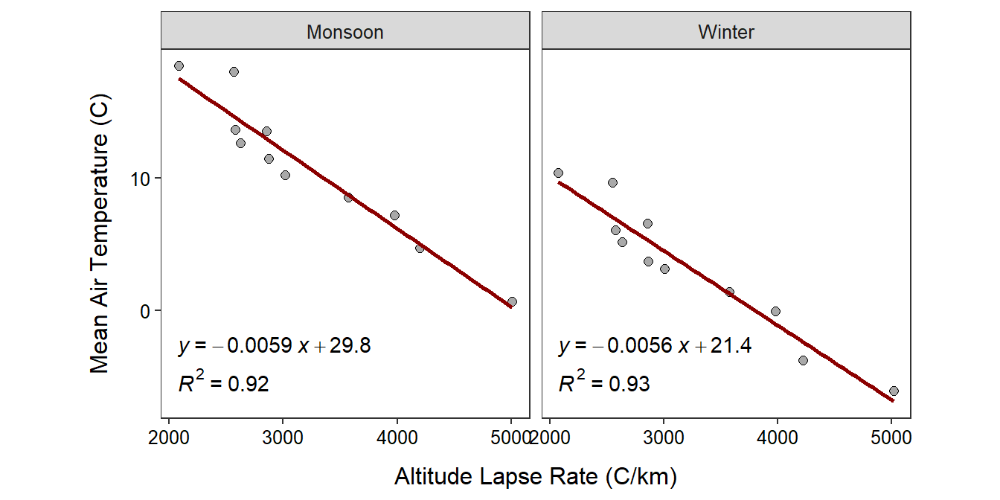

Equation of the Line I
Supposed that a student recorded the height of suds (mm) in a dishwasher for ten different amounts of soap (g) and that the resulting best-fit line was Y=-20.2+12.4*X for values of X between 3.5 and 8.0. Use this information to perform the following.
- Identify the response variable.
- Identify the explanatory variable.
- Identify the slope.
- Interpret the slope.
- Interpret the intercept.
- Write a question that would be a valid prediction.
- Write a question that would be an extrapolation.
Beach Sand
Geologists examined the relationship between the median diameter (mm) of sand granules and the slope or angle (degrees) for nine ocean beaches. Their primary interest was in determining if the variability in sand granule size could be explained by the angle of the beach. The results of their analysis is shown in the scatterplot below.

Use these results to answer the questions below.
- In terms of the variables of this problem, what is the equation of the best-fit line?
- In terms of the variables of this problem, INTERPRET the value of the slope?
- In terms of the variables of this problem, INTERPRET the value of the y-intercept?
- What is the predicted median sand diameter for a beach angle of 15o?
- What is the predicted median sand diameter for a beach angle of 4o?
- What is the residual if the beach angle is 5o and the median sand diameter is 0.2 mm?
- What is the correlation coefficient between median sand diameter and the beach angle?
- What proportion of the variability in median sand diameter is explained by knowing the beach angle?
- How much would you expect the median sand diameter to change if the beach angle increased by 4o?
- Comment on linearity and homoscedasticity.
Everest Temperatures
Climatologists examined the relationship between actual mean air temperatures and an index designed to be related to air temperature adjusted for altitude (called “altitude lapse rate”) for eleven locations at various elevations on Mount Everest during both the winter and monsoon seasons. The researchers wanted to determine if the altitude lapse rate could be used to predict actual air temperatures. The results of their analysis is shown in the scatterplot below.

Use these results to answer the questions below using only the monsoon results.
- In terms of the variables of this problem, what is the equation of the best-fit line?
- In terms of the variables of this problem, INTERPRET the value of the y-intercept?
- In terms of the variables of this problem, INTERPRET the value of the slope?
- What is the predicted mean air temperature if the altitude lapse rate is 4000oC/km?
- What is the residual if the mean air temperature is 0oC and the altitude lapse rate is 3500oC/km?
- What is the correlation coefficient between mean air temperature and altitude lapse rate?
- How much would you expect the mean air temperature to change if the altitude lapse rate increased by 1000oC/km?
- What is the predicted mean air temperature if the altitude lapse rate is 1000oC/km?
- What proportion of the variability in mean air temperature is explained by knowing the altitude lapse rate?
- Comment on linearity and homoscedasticity.